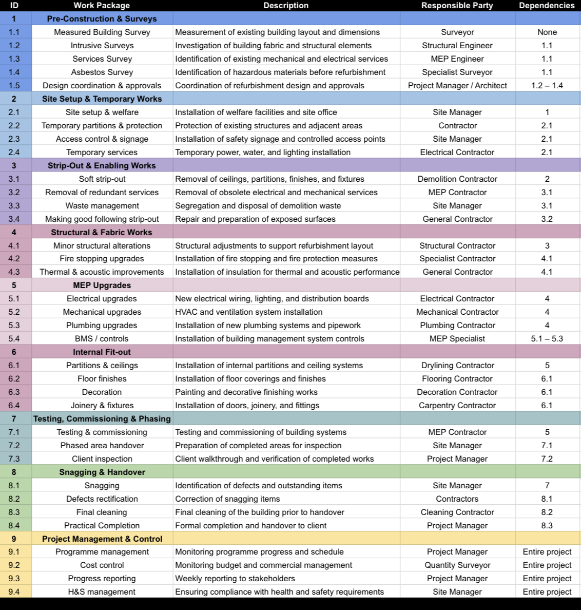
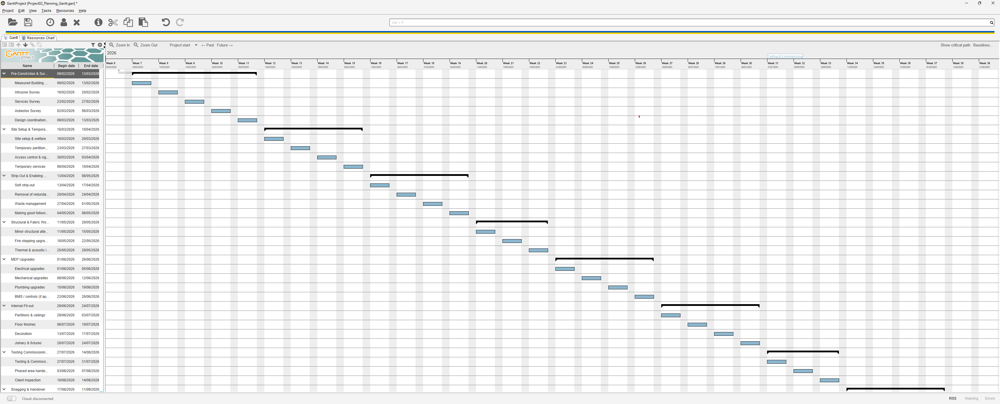
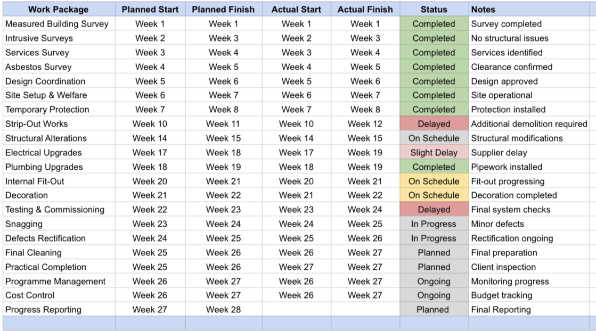
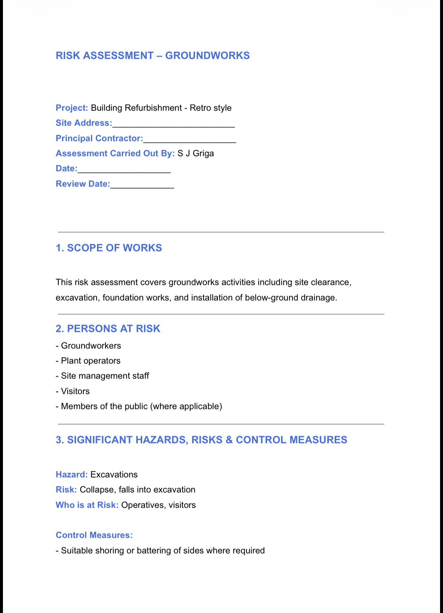
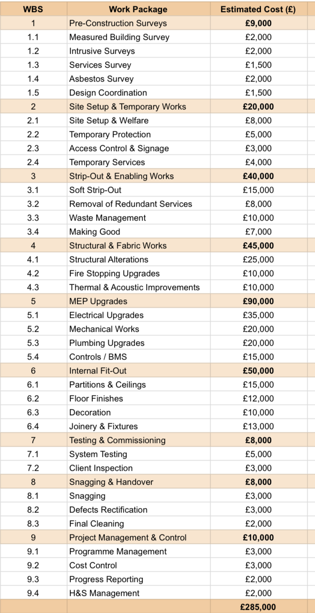
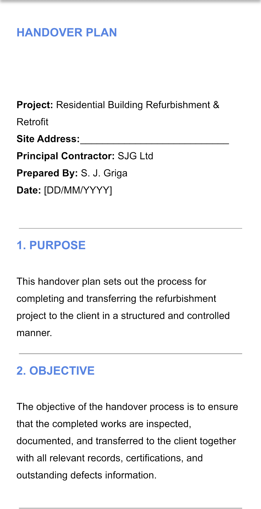

Project Overview
This portfolio simulation demonstrates my ability to manage a refurbishment and retrofit project across the full project lifecycle, from planning and programme control through to RAMS, cost management, progress tracking, and final handover.
Project Objectives
- Plan and sequence refurbishment works effectively
- Control time, cost, and risk within an existing building environment
- Apply health & safety management in line with refurbishment site practice
- Monitor progress against baseline programme
- Deliver a structured handover with minimal disruption
Scope of Works
- Pre-construction surveys and investigations
- Site setup and temporary works
- Strip-out and enabling works
- Structural and fabric upgrades
- Mechanical, Electrical and Plumbing (MEP) upgrades
- Internal fit-out and finishes
- Testing, commissioning, and phased handover
- Snagging, rectification, and practical completion
Key Deliverables
Planning & Programme
Project planning was developed using a structured Work Breakdown Structure (WBS), which was then translated into a 28-week refurbishment programme with logical sequencing, dependencies, and phasing.
- Structured Work Breakdown Structure (WBS)
- Programme planning table
- Logical sequencing and dependencies

Skills demonstrated: planning logic, sequencing, dependency management
Construction Programme (Gantt Chart)
A 28-week baseline refurbishment programme developed from the project Work Breakdown Structure (WBS). The programme demonstrates logical sequencing of activities, phased works, and a defined snagging and handover phase.
- Logical sequencing from surveys to practical completion
- Phased progression through strip-out, structural works, MEP, and fit-out
- Programme aligned with progress tracking and cost control
- Practical Completion identified at the final phase

Project Control & Progress Tracking
Project control was managed by comparing planned programme dates against actual site progress, allowing delays and ongoing works to be tracked through a structured planned-vs-actual table.
- Planned vs actual progress monitoring
- Delay identification and reporting
- Programme control during live refurbishment works

Skills demonstrated: programme monitoring, reporting, delay awareness
Health & Safety (RAMS)
Health and safety was managed through structured RAMS documentation and incident reporting, aligned with refurbishment and retrofit site practice.
- Risk Assessments
- Groundworks Method Statement
- Strip-Out Method Statement
- Near Miss reporting

Skills demonstrated: RAMS preparation, refurbishment safety management, incident reporting
Cost Management
Project costs were planned in line with the refurbishment Work Breakdown Structure (WBS) and monitored throughout the project lifecycle to maintain commercial control and ensure the project remained within the approved £280,000 budget.
- Cost planning and budgeting
- WBS-aligned cost allocation
- Commercial control preparation
- Planned vs actual cost monitoring
- Identification of cost variances during delivery


Skills demonstrated: budgeting, cost planning, variance analysis, budget monitoring
Handover & Close-Out
The project will be closed out through structured handover documentation, including practical completion, snagging resolution, and defects management.
- Practical Completion certification
- Defects rectification and close-out
- Client-facing handover documentation

Skills demonstrated: project close-out, documentation control, client handover
Project Outcomes
- Refurbishment works planned and sequenced through a structured baseline programme
- Progress monitored using planned vs actual tracking
- Health & safety documentation prepared for refurbishment risks
- Cost plan aligned with the project brief budget of £280,000
Lessons Learned
- Refurbishment projects require stronger phasing and coordination than new build works
- Early surveys reduce uncertainty in existing buildings
- Progress tracking is essential for identifying delays in live project environments
- Clear RAMS documentation supports safer refurbishment delivery
Tools & Methods Used
- Excel / Google Sheets (WBS, Programme, Cost Plan, Progress Tracking)
- GanttProject / Google Sheets (Programme visualisation)
- Word (RAMS, Method Statements, Near Miss documentation)
- Structured folder-based project control
Why This Project Matters
This project demonstrates practical construction project management within a refurbishment and retrofit environment. It shows how I plan refurbishment works, manage risk, monitor progress, control cost, and prepare a project for close-out.